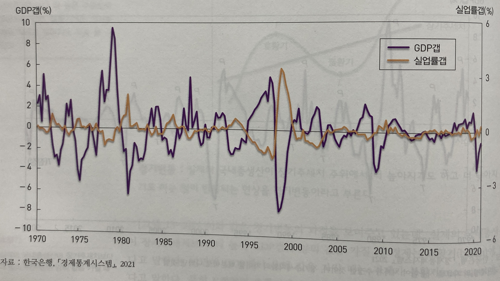
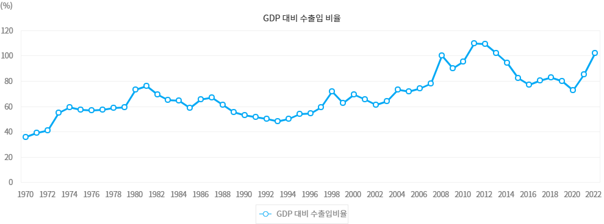
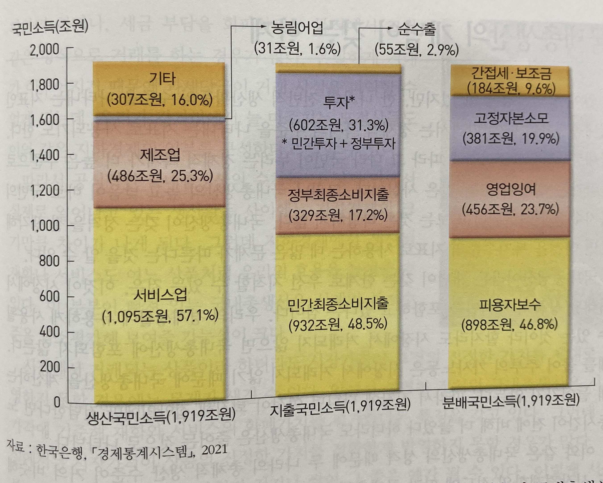
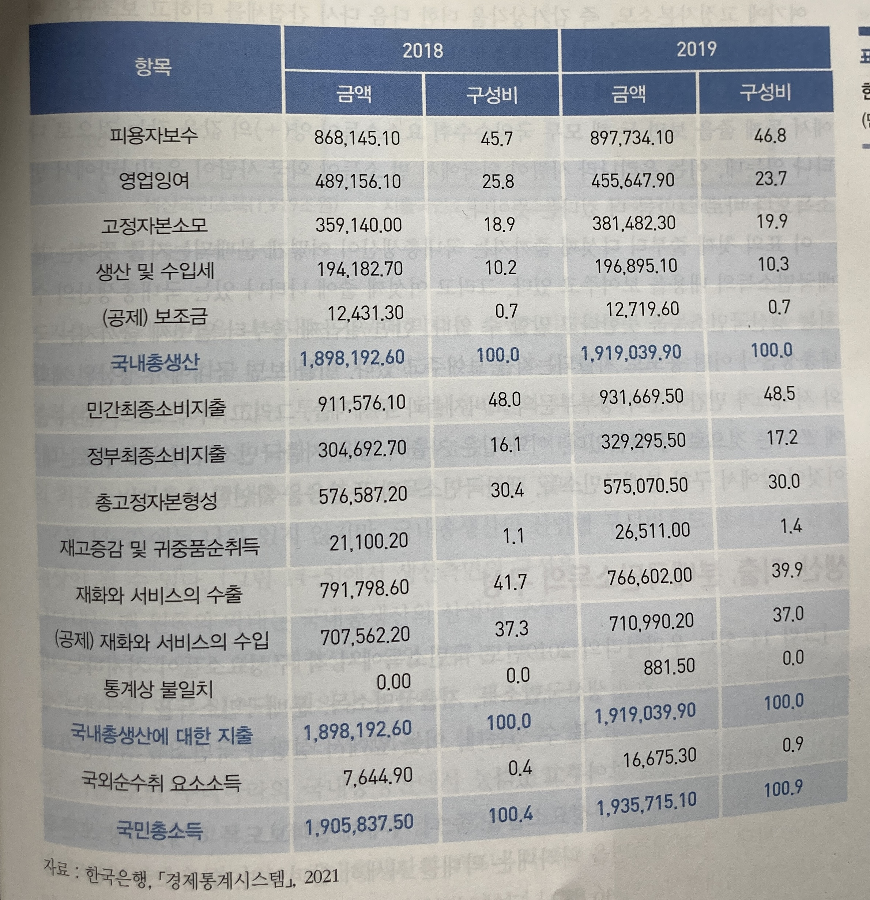
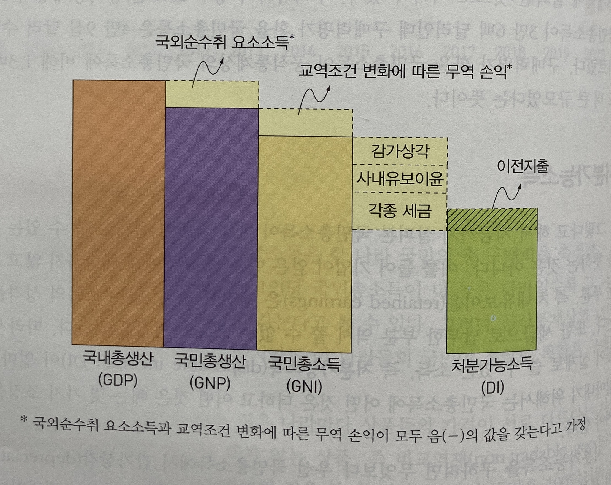

지출국민소득
소비지출+투자지출+정부지출+순수출
국민소득
대체로 국내총생산(gross domestic product)으로 측정. 즉 한해동안 그 나라에서 생산된 상품의 총 부가가치
경제성장(economic growth)
국내 총생산의 장기적 추세
경기변동(business fluctuation)
국내 총생산의 단기적 동향.
국내총생산이 장기추세치보다 높거나(호황기) 낮은(불황기) 일이 반복되는 현상
공행성(co-movement)
경기변동과정에서 여러 변수가 일정한 관련을 갖고 함께 움직이는 경향 (예. 실업률 ~ GDP갭)

물가(price level)
모든 상품가격의 평균적인 수준
(예. 소비자물가, 생산자물가, 근원물가 등)
인플레이션(inflation)
물가가 지속적으로 상승하는 현상
디플레이션(deflation)
물가가 지속적으로 하락하는 현상
Q1) 인플레이션은 반드시 나쁜 것일까?
Q2) 디플레이션은 좋은 것일까?
대외의존도
총수출액과 총수입액의 합을 국내총생산으로 나눈 비율

출처: 국가지표체계 (https://www.index.go.kr/unity/potal/indicator/IndexInfo.do?cdNo=210&clasCd=2&idxCd=4207)
대외의존도
총수출액과 총수입액의 합을 국내총생산으로 나눈 비율
국제수지(balance of payments)
한 나라에 들어오고 나가는 화폐의 흐름을 함께 모아 정리해 놓은 것
환율(exchange rate)
한 나라 화폐와 다른 나라 화폐 간 교환 비율 → 수출품과 수입품의 상대가격 변화에 영향
총수요/총공급
국민경제 전체에서 생산되는 상품에 대한 총체적 수요/공급
개별상품시장
대표상품 시장
총수요/총공급
국민경제 전체에서 생산되는 상품에 대한 총체적 수요/공급
총수요증가효과
총공급감소효과
일정 기간 동안 한 나라 안에서 생산되어 최종적인 용도로 사용되는 재화와 서비스의 총 가치
중간재(intermediate goods)
다른 상품의 생산과정에 사용되는 중간투입물의 성격을 가진 재화 (예. 빵 생산을 위해 투입된 기계)
부가가치(value added)
각 생산단계에서 새로이 창출된 가치
일정 기간 동안 한 나라 안에서 생산되어 최종적인 용도로 사용되는 재화와 서비스의 총 가치
명목국내총생산(nominal GDP): 경상가격(current price)
국내총생산을 구하는 해의 상품생산량에 그 해의 가격을 곱해 구한 화폐가치
→ 화폐 상의 숫자 반영 그 자체가 중요
실질국내총생산(real GDP): 불변가격(constant price)
국내총생산을 구하는 해의 상품생산량에 기준이 되는 해의 가격을 곱해 구한 화폐가치
→ 물가변동을 제거한 생산물의 구매력이 중요
생산, 지출, 분배국민소득이 언제나 서로 같은 값을 갖는 항등관계에 있다는 것
생산, 지출, 분배국민소득이 언제나 서로 같은 값을 갖는 항등관계에 있다는 것
소비지출+투자지출+정부지출+순수출
국내총생산
= 부가가치의 합
임금+이자+지대+이윤
〈한국의 국민계정(2019년) (단위: 조원)〉

〈국민소득의 구성 (2019년)〉


물가지수
기준시점의 물가를 100으로 잡고 다른 시점의 물가를 이의 백분비로 표시한 지수
소비자물가지수(consumer price index: CPI)
전국의 가구가 사용하는 대표적 소비재의 가격동향을 보여주는 물가지수
생산자물가지수(produce price index: PPI)
기업 사이에서 거래되는 대표적 원자재 및 자본재, 서비스의 가격 동향을 보여주는 물가지수
물가지수 계산 시에는 바스켓에 담긴 물품의 거래량을 고려하여 상품비중에 가중치(weight)를 부여
| 2015년(기준시점) | 2021년 | |||
|---|---|---|---|---|
| 생산량 | 가격(원) | 생산량 | 가격(원) | |
| 쌀 | 200가마 | 5만원 | 400가마 | 7만원 |
| 옷 | 300벌 | 2만원 | 200벌 | 3만원 |
라스파이레스 지수: 기준시점의 가중치를 사용하는 지수
$= \dfrac{P_1 \cdot Q_0}{P_0 \cdot Q_0}$
2021년 소비자물가지수 $= \dfrac{200 \times 7만원 + 300 \times 3만원}{200 \times 5만원 + 300 \times 2만원} \times 100 = \dfrac{2300만원}{1600만원} \times 100 = 143.8$
파셰 지수: 대상연도의 거래량을 가중치로 사용하는 지수
$= \dfrac{P_1 \cdot Q_1}{P_0 \cdot Q_1}$
2021년 소비자물가지수 $= \dfrac{400 \times 7만원 + 200 \times 3만원}{400 \times 5만원 + 200 \times 2만원} \times 100 = \dfrac{3400만원}{2400만원} \times 100 = 141.7$
GDP 디플레이터(GDP deflator)
한 나라 안에서 생산되는 모든 상품의 가격을 고려 대상으로 삼아 산출한 물가지수
GDP 디플레이터 $= \dfrac{\text{명목국내총생산}}{\text{실질국내총생산}} \times 100$
(해마다 다른 가중치(그 해의 상품거래량)으로 산출하는 지수 = 파셰 지수)
물가상승률/인플레이션율(inflation rate)
일정기간 동안 물가지수가 증가한 비율 (전년 동월, 전월 대비)
$\pi = \dfrac{CPI_{23} - CPI_{22}}{CPI_{22}}$
Q1) 바스켓 물품은 변하나요?
: CPI는 2년 단위 조정, PCE(개인소비지출) 지수는 분기단위 조정(* 일부는 월단위 조정)
Q2) 과거에는 많이 팔리다가 지금은 모두 사용하지만 덜 팔리는 제품은 어떻게 바뀌나요?
Q3) 라스파이레스 지수의 문제점은 무엇일까요?
: 상대가격변화에 따른 소비거래량 변화(소득 및 대체효과)를 고려하지 않음 → 물가를 과대평가 (반대로 파셰지수는 물가를 과소평가) → 이에 대한 대안이 이 둘을 기하평균 한 피셔지수
Q4) “물가가 높다는 것”과 “물가상승률”이 높다는 것은 같은 의미인가요?
(참고: 1990년대 일본은 물가는 높았지만 상승률은 매우 낮았음)
Q & A
권규상 Kyusang Kwon
(kyusang.kwon@chungbuk.ac.kr)